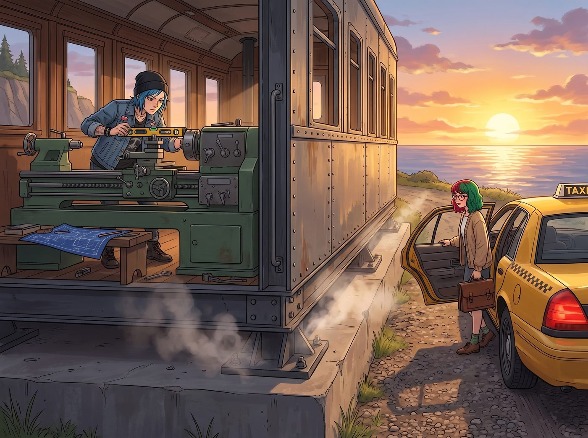
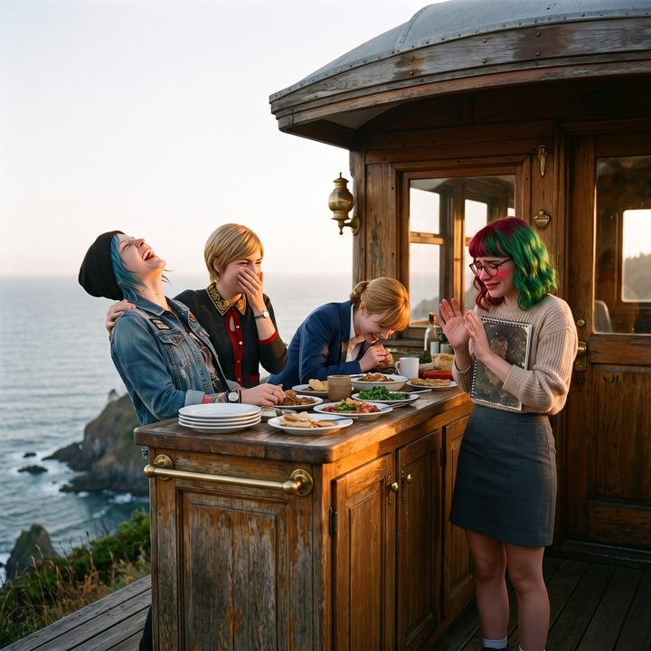

懸崖邊的第一頓晚餐（倒敘）


當二號車廂在新基地的地基上鎖死最後一顆螺栓，那場浩浩蕩蕩的鋼鐵巨獸北上之旅終於在華盛頓州奧林匹亞半島的懸崖邊畫上了完美的句號。
一、堵死漏洞的反擊
第二天傍晚，當 Chloe 還在車廂裡拿著水平儀欣賞她那台零誤差的重型車床時，一輛出租車停在了新基地的碎石路上。
車門打開，十九歲的 Lily 穿著那件萬年不變的米色針織衫，推了推圓框眼鏡，手裡依然抱著那個裝滿了各種合規審計文件的公事包。
這是她作為留守大員在波特蘭完成了所有行政收尾工作後，第一次踏上這片新的土地。
「大家晚上好。」Lily 走到車廂門口，標準地鞠了個躬，然後習慣性地開始了她的環境風控掃描。
她的目光猶如一台精密的X光機，迅速掃過車廂的外接電源線、排水管道，以及那台剛裝好的重型車床。
「Chloe 學姐，」Lily 眉頭微皺，拿出了小本子，準備開始她的找碴日常，「根據州地質調查局的報告，這片臨海高地屬於三級地震帶。您這台車床雖然鎖死了地腳螺栓，但周圍沒有安裝防震柔性基座。如果在作業時發生四級以上的輕微地震，機器的共振可能會導致……」
「停——！」Chloe 從車床底下鑽出來，手裡拿著一把棘輪扳手，臉上帶著油污，卻笑得極其狂妄。
她大步走上前，一把將一份蓋著州建築安全局紅章的文件拍在 Lily 胸前。
「看看這是什麼，實習生！」Chloe 得意洋洋地指著文件上的簽名，「妳以為只有妳懂法規嗎？老娘在鎖螺栓之前，已經讓 Victoria 動用她的家族律師，給這台車床申請了特種工業減震基座豁免權！理由是它連接了我們自己研發的動態應力釋放系統！妳那一套挑刺的黑魔法，在這裡已經失效了！」
Lily 愣住了。她低頭看了一眼那份完美無缺的合規文件，又看了看一臉快誇我的 Chloe，圓框眼鏡後面的眼睛裡閃過一絲驚訝。
「這……這份文件在邏輯上確實毫無破綻。」Lily 嚥了一口唾沫，彷彿一個突然失去了工作目標的糾察隊員，小聲嘟囔著，「您……您居然提前把行政漏洞給堵死了？」
「哈哈哈哈！看到沒有！法規終結者吃癟了！」Chloe 狂笑著轉頭看向 Max 和 Victoria，「這就是街頭智慧與資本力量的完美結合！我們終於治住這個書呆子了！」
被堵住了嘴的 Lily，只能有些挫敗地收起了她的小本子。但看著這個充滿了松針清香和海風氣息的新家，她那顆緊繃的心臟，其實早就偷偷放鬆了下來。
二、懸崖邊的燉飯
當天晚上的晚飯，是在懸崖邊的木質觀景露台上進行的。
Kate 在剛搭好的戶外廚房裡，用本地新鮮的海產做了一鍋香氣四溢的海鮮燉飯。Max 則在一旁幫忙分發著從冰桶裡拿出來的櫻桃味汽水。
夕陽將普吉特海灣染成了熔金色，海鷗在遠處盤旋。這種平靜與廣闊，是她們在波特蘭那間充滿機油味的車廂裡從未感受過的。
Lily 端著一碗熱騰騰的燉飯，坐在露台的長椅上。她看著身邊大口吃著海鮮的 Chloe、優雅地切著扇貝的 Victoria，以及正溫柔地給大家添飯的 Kate。
三、難得的真情流露
她想起了在波特蘭留守的那三個不眠之夜，想起了她為了確保車隊順利北上而準備的那些厚厚的文件。她本來做好了孤軍奮戰的準備，甚至做好了大家到了新基地後會因為各種混亂而焦頭爛額、需要她再次施展黑魔法來救場的準備。
但現在，看著這一切井然有序、溫馨平靜的畫面，一種前所未有的情緒湧上了這個十九歲女孩的心頭。
「其實……」Lily 放下勺子，聲音有些哽咽。她推了推眼鏡，試圖掩飾發紅的眼眶。
「其實，我在波特蘭的時候，真的很怕你們在路上會遇到麻煩。我準備了那麼多預案，甚至想好了如果警察扣車，我要怎麼連夜偽造一份聯邦通行證明去疏通關係……」Lily 抽了一下鼻子，語氣裡帶著難得的脆弱，「但你們做到了。你們沒有讓我操心。看到大家平安無事地坐在這裡……我……我真的很高興。」
這是 Lily 第一次在大家面前展露如此真情實感的一面。沒有法規，沒有報表，只有一個十九歲女孩對這群家人的深深牽掛。
空氣突然安靜了。Chloe 停下了咀嚼的動作，Victoria 放下了刀叉，Kate 溫柔地看著她，眼裡滿是心疼。大家都準備好要給這個感性的學妹一個溫暖的擁抱了。
四、被相機戳破的感動
就在這溫馨到幾乎要讓人落淚的時刻——
「咳咳。」Max 突然咳嗽了兩聲，舉著她那台寶麗來相機，從相機後面探出半個腦袋。
「Lily，妳感動歸感動……」Max 忍著笑，用一種極其無辜的語氣說道，「但妳剛才說的偽造聯邦文件，是不是已經構成了重罪？如果我現在把這段錄音交出去，妳覺得妳能在監獄裡申請到幾張免稅表格？」
「噗——」Chloe 剛喝進去的一口汽水直接噴了出來，然後捂著肚子在椅子上狂笑不止。
「Max 學姐！！」Lily 剛才那點感動的眼淚瞬間被憋了回去。她的臉唰地一下紅到了脖子根，再次變回了那個炸毛的乖乖牌。
「我……我只是說了一個假設性的極端預案！這在法律上屬於思想犯罪的灰色地帶，沒有實際行動是不能定罪的！」Lily 慌亂地試圖用行政術語來挽回局面。
「是嗎？那我得記下來。」Max 壞笑著舉起相機，「來，犯罪嫌疑人，笑一個。」
「咔嚓。」
閃光燈亮起，將落日、海風、笑得前仰後合的同伴，以及那個紅著臉、試圖辯解的十九歲行政魔王，永遠地定格在了這個新家的第一頓晚餐裡。